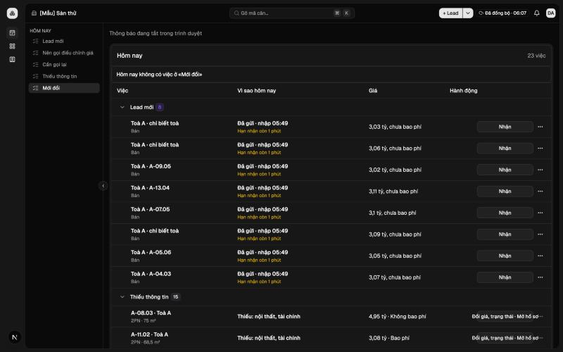

Quản trị sàn thêm nhãn trạng thái riêng như «Giữ chỗ», bắt buộc neo vào một trong sáu trạng thái chuẩn và nhận luật, màu của trạng thái đó
docs/superpowers/specs/2026-11-06-trang-thai-rieng-design.md
| Eval | Tiêu chí | Loại | Verdict | run_id | verified_at |
|---|---|---|---|---|---|
| E1 | AC-1 | test | PASS | minted-trang-thai-rieng-E1-r3 | 2026-11-05T23:27:33Z |
| E2 | AC-2 | test | PASS | minted-trang-thai-rieng-E2-r2 | 2026-11-05T23:12:06Z |
| E2b | AC-2 | test | PASS | minted-trang-thai-rieng-E2b-r2 | 2026-11-05T23:12:06Z |
| E2c | AC-2 | test | PASS | minted-trang-thai-rieng-E2c-r2 | 2026-11-05T23:12:06Z |
| E3 | AC-3 | test | PASS | minted-trang-thai-rieng-E3-r2 | 2026-11-05T23:12:06Z |
| E3b | AC-3 | test | PASS | minted-trang-thai-rieng-E3b-r2 | 2026-11-05T23:12:06Z |
| E3c | AC-3 | test | PASS | minted-trang-thai-rieng-E3c-r2 | 2026-11-05T23:12:06Z |
| E3d | AC-3 | test | PASS | minted-trang-thai-rieng-E3d-r2 | 2026-11-05T23:12:06Z |
| E4 | AC-4 | test | PASS | minted-trang-thai-rieng-E4-r2 | 2026-11-05T23:12:06Z |
| E4b | AC-4 | test | PASS | minted-trang-thai-rieng-E4b-r2 | 2026-11-05T23:12:06Z |
| E5 | AC-5 | test | PASS | minted-trang-thai-rieng-E5-r2 | 2026-11-05T23:12:06Z |
| E5b | AC-5 | script | PASS | minted-trang-thai-rieng-E5b-r2 | 2026-11-05T23:12:06Z |
| E6 | AC-6 | test | PASS | minted-trang-thai-rieng-E6-r1 | 2026-11-05T22:54:59Z |
| E6b | AC-6 | test | PASS | minted-trang-thai-rieng-E6b-r1 | 2026-11-05T22:54:59Z |
| E6c | AC-7 | test | PASS | minted-trang-thai-rieng-E6c-r2 | 2026-11-05T23:12:06Z |
| E7 | AC-7 | test | PASS | minted-trang-thai-rieng-E7-r2 | 2026-11-05T23:12:06Z |
| E7b | AC-7 | test | PASS | minted-trang-thai-rieng-E7b-r2 | 2026-11-05T23:12:06Z |
| E7c | AC-7 | test | PASS | minted-trang-thai-rieng-E7c-r2 | 2026-11-05T23:12:06Z |
| E8 | AC-8 | test | PASS | minted-trang-thai-rieng-E8-r3 | 2026-11-05T23:27:33Z |
| E8b | AC-8 | test | PASS | minted-trang-thai-rieng-E8b-r3 | 2026-11-05T23:27:33Z |
| E9 | AC-9 | test | PASS | minted-trang-thai-rieng-E9-r2 | 2026-11-05T23:12:06Z |
| E9b | AC-9 | test | PASS | minted-trang-thai-rieng-E9b-r1 | 2026-11-05T22:54:59Z |
| E10 | AC-10 | test | PASS | minted-trang-thai-rieng-E10-r1 | 2026-11-05T22:54:59Z |
| E10b | AC-10 | test | PASS | minted-trang-thai-rieng-E10b-r2 | 2026-11-05T23:12:06Z |
| E11 | AC-1 | ui-check | PASS | minted-trang-thai-rieng-E11-r3 | 2026-11-05T23:27:33Z |
| E12 | AC-3 | ui-check | PASS | minted-trang-thai-rieng-E12-r2 | 2026-11-05T23:12:06Z |
| E13 | AC-8 | ui-check | PASS | minted-trang-thai-rieng-E13-r3 | 2026-11-05T23:27:33Z |
| E14 | AC-1 | script | PASS | minted-trang-thai-rieng-E14-r3 | 2026-11-05T23:27:33Z |
| E14b | AC-1 | script | PASS | minted-trang-thai-rieng-E14b-r3 | 2026-11-05T23:27:33Z |
| E15 | AC-7 | ui-check | PASS | minted-trang-thai-rieng-E15-r2 | 2026-11-05T23:12:06Z |
AC-1: Given quản trị sàn A mở Cài đặt › Sàn › Trạng thái, When thêm nhãn «Giữ chỗ» ở nhóm Đang giao dịch rồi Lưu, Then
cmd: npm run db:migrate && npm run db:test ℹ duration_ms 99026.673209
AC-2: Given quản trị sàn A ở màn Trạng thái, When gửi một nhãn không neo, neo vào giá trị ngoài sáu trạng thái chuẩn,
AC-2: Given quản trị sàn A ở màn Trạng thái, When gửi một nhãn không neo, neo vào giá trị ngoài sáu trạng thái chuẩn,
AC-2: Given quản trị sàn A ở màn Trạng thái, When gửi một nhãn không neo, neo vào giá trị ngoài sáu trạng thái chuẩn,
AC-3: Given sàn A có nhãn «Giữ chỗ» neo Đang giao dịch, When đầu chủ mở ô Trạng thái của một căn Đang bán ở Bảng hàng và
AC-3: Given sàn A có nhãn «Giữ chỗ» neo Đang giao dịch, When đầu chủ mở ô Trạng thái của một căn Đang bán ở Bảng hàng và
AC-3: Given sàn A có nhãn «Giữ chỗ» neo Đang giao dịch, When đầu chủ mở ô Trạng thái của một căn Đang bán ở Bảng hàng và
AC-3: Given sàn A có nhãn «Giữ chỗ» neo Đang giao dịch, When đầu chủ mở ô Trạng thái của một căn Đang bán ở Bảng hàng và
AC-4: Given một căn mang «Giữ chỗ», When đầu chủ mở thực đơn trạng thái của căn hay gửi một lệnh đổi trạng thái, Then căn
AC-4: Given một căn mang «Giữ chỗ», When đầu chủ mở thực đơn trạng thái của căn hay gửi một lệnh đổi trạng thái, Then căn
AC-5: Given một căn mang «Giữ chỗ» nằm trong một Lần gửi, When khách riêng hay nhóm môi giới mở `/s/<mã>`, hay đầu chủ
AC-5: Given một căn mang «Giữ chỗ» nằm trong một Lần gửi, When khách riêng hay nhóm môi giới mở `/s/<mã>`, hay đầu chủ
AC-6: Given sàn A có căn «Giữ chỗ», «Đã cọc» (mặc định Đang giao dịch) và căn Đang bán, When đầu chủ lọc cột Trạng thái
AC-6: Given sàn A có căn «Giữ chỗ», «Đã cọc» (mặc định Đang giao dịch) và căn Đang bán, When đầu chủ lọc cột Trạng thái
AC-7: Given trưởng nhóm sàn A đổi một căn Đang bán của đầu chủ sang «Giữ chỗ», When đầu chủ mở Hôm nay, Then nhóm «Mới
AC-7: Given trưởng nhóm sàn A đổi một căn Đang bán của đầu chủ sang «Giữ chỗ», When đầu chủ mở Hôm nay, Then nhóm «Mới
AC-7: Given trưởng nhóm sàn A đổi một căn Đang bán của đầu chủ sang «Giữ chỗ», When đầu chủ mở Hôm nay, Then nhóm «Mới
AC-7: Given trưởng nhóm sàn A đổi một căn Đang bán của đầu chủ sang «Giữ chỗ», When đầu chủ mở Hôm nay, Then nhóm «Mới
AC-8: Given nhãn «Giữ chỗ» đang được hai căn mang, When quản trị đổi tên thành «Giữ chỗ 7 ngày» rồi Lưu, Then hai căn hiện
cmd: npm run db:migrate && npm run db:test ℹ duration_ms 99026.673209
AC-8: Given nhãn «Giữ chỗ» đang được hai căn mang, When quản trị đổi tên thành «Giữ chỗ 7 ngày» rồi Lưu, Then hai căn hiện
cmd: npm test -w @quy-hang/web ℹ duration_ms 4168.365458
AC-9: Given sàn A có nhãn riêng, When người của sàn B mở Bảng hàng, gọi `GET /api/v1/company/statuses`, hay gửi lệnh đổi
AC-9: Given sàn A có nhãn riêng, When người của sàn B mở Bảng hàng, gọi `GET /api/v1/company/statuses`, hay gửi lệnh đổi
AC-10: Given một sàn chưa thêm nhãn nào, When mở Bảng hàng, Hôm nay, trang khách và bản phát hàng, Then mọi chữ trạng
AC-10: Given một sàn chưa thêm nhãn nào, When mở Bảng hàng, Hôm nay, trang khách và bản phát hàng, Then mọi chữ trạng
AC-1: Given quản trị sàn A mở Cài đặt › Sàn › Trạng thái, When thêm nhãn «Giữ chỗ» ở nhóm Đang giao dịch rồi Lưu, Then
AC-3: Given sàn A có nhãn «Giữ chỗ» neo Đang giao dịch, When đầu chủ mở ô Trạng thái của một căn Đang bán ở Bảng hàng và
AC-8: Given nhãn «Giữ chỗ» đang được hai căn mang, When quản trị đổi tên thành «Giữ chỗ 7 ngày» rồi Lưu, Then hai căn hiện
AC-1: Given quản trị sàn A mở Cài đặt › Sàn › Trạng thái, When thêm nhãn «Giữ chỗ» ở nhóm Đang giao dịch rồi Lưu, Then
Kết quả đã khai trước của eval này (đạt có giới hạn, xem Known limits), chỉ chấp nhận cùng E14b. 16 tệp giao diện ngoài bản đồ
AC-1: Given quản trị sàn A mở Cài đặt › Sàn › Trạng thái, When thêm nhãn «Giữ chỗ» ở nhóm Đang giao dịch rồi Lưu, Then
E14b: chỉ có dòng báo oan đã khai (1): lệch: apps/web/src/app/(app)/settings/statuses/page.tsx · thuộc hai nhóm màn: cai-dat-san, trang-tam
AC-7: Given trưởng nhóm sàn A đổi một căn Đang bán của đầu chủ sang «Giữ chỗ», When đầu chủ mở Hôm nay, Then nhóm «Mới

| Khối | Tác tử | Token đầu ra |
|---|---|---|
| S4 round 1 | 25 | 106.599 |
| S4 round 2 | 23 | 89.196 |
| S4 round 3 | 20 | 58.568 |
3 lượt chấm · tổng 254.363 token
chưa ghi quan sát production